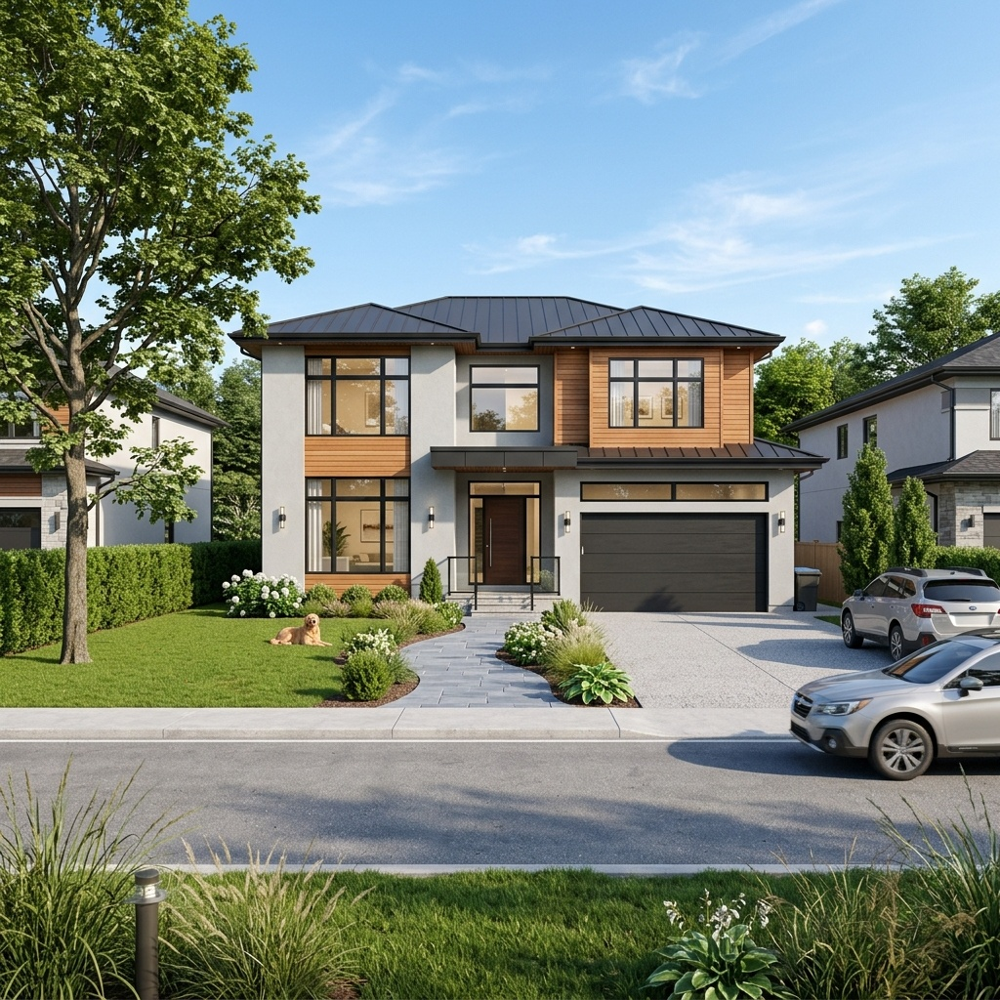

There is a particular kind of tool that keeps showing up in the 2026 roundups, and it's worth naming as a category rather than a product. The pitch is always the same: drop in an image — a massing study, a SketchUp screenshot, even a rough phone photo of a site — choose a style from a preset menu, and seconds later a polished, photoreal exterior lands in your browser. The recurring "complete guide" listicles single one out by name, Architect AI, advertising a photorealistic exterior render in under ten seconds and more than twenty architectural style presets. It is not alone; it's the clearest face of a whole class of one-click renderers all selling the same thing: rendering with the workflow removed.
That's a genuinely interesting proposition, and it deserves more than a reflexive eye-roll from people who render the hard way. So rather than review Architect AI as a single product — its feature list will have changed by the time you read this — let's review the category, using it as the lead example, and be honest about both halves of the trade it offers.
What the speed actually buys
The headline number — under ten seconds — is real and it matters more than render purists like to admit. When the cost of producing an image drops from forty minutes to ten seconds, you don't just save thirty-nine minutes; you change what rendering is for. At ten seconds an image, rendering stops being a deliverable you produce once and starts being a way of thinking you do continuously. You can throw a massing into the tool, see it as brick, as charred timber, as white render, as glass, in the time it would take to describe those options out loud in a meeting.
That speed has a second payoff: it collapses the gap between a non-renderer and a render. A project architect with no Enscape licence and no V-Ray patience can, between two emails, put a presentable exterior in front of a client. For early-stage communication — the "here's roughly the feeling we're going for" moment — that accessibility is the whole point. The preset menu is doing real work here too: twenty-plus named styles save you the prompt-craft that trips up newcomers, turning "I want it to look like a warm Scandinavian house at dusk" into a single click.
At ten seconds an image, rendering stops being a deliverable and becomes a way of thinking.
Where it quietly breaks
Now the other half of the trade, because the speed is not free — it's paid for in control, and the bill comes due exactly when the work gets serious.
It renders from a picture, not your building
A one-click tool works from a flat image and a preset. It has no access to your real geometry, so it interprets — and interpretation is the polite word for invention. Window proportions drift. A cantilever becomes a column. A carefully studied roofline gets "improved" into something the model has seen more often in training. For a mood study this is harmless and occasionally inspiring. For anything a client will treat as a promise about the building, it's a liability hiding inside a beautiful image. We've written separately about how often this geometry hallucination slips through unexamined; instant tools are the category most prone to it, precisely because there's no dial to hold them back.
There's no adherence control to reach for
The serious renderers all now expose some version of a model-adherence control — Veras's Geometry Override, ControlNet strength in ComfyUI, true 3D import in the newer tools — a dial that governs how far the AI may stray from your model. The one-click category, almost by definition, removes that dial. Speed and the absence of controls are the same design decision: you can't have a ten-second render and a settings panel you tune for ten minutes. So when the output is wrong, your only recourse is to re-roll and hope, or to upload a tighter source image and try to steer with the input. That's a real ceiling on how far this kind of tool can carry a project.
Preset styling converges
Twenty presets sound like range, but presets are trained tastes, and trained tastes cluster. Lean on them and your concept boards start to look like everyone else's concept boards — the same dusk light, the same moody timber, the same suspiciously photogenic landscaping. The tool that makes a render effortless makes a distinctive render harder, because the path of least resistance is someone else's aesthetic.
Built for: same-day concept images, rapid mood and material studies, putting a presentable exterior in front of a client without a render licence or a render specialist. Not built for: accurate, geometry-faithful client deliverables, design-development coordination, or anything where the render is a claim about the building. The trade in one line: you exchange every control for speed — which is a brilliant deal at the front of a project and a bad one at the back.
Where it genuinely earns its place
None of that makes the category a gimmick. It makes it a specialised tool that the roundups mis-sell as a general one. Used for what it's actually good at, an instant renderer is excellent:
- Front-of-project speed. The first client conversation, where you need three vibes on screen and nobody is signing anything. Ten seconds an option is exactly right.
- Non-specialist access. Giving someone without a rendering pipeline a way to communicate intent visually instead of in words.
- Throwaway volume. Generating a dozen quick directions to react to, knowing eleven will be discarded. Cheapness of iteration is the whole feature.
- Mood, not measurement. Atmosphere, time of day, material feel — the qualities that survive reinterpretation because you weren't promising precision in the first place.
The failure mode isn't using these tools; it's using them past their stage. The instant render that won the early meeting becomes a problem the moment someone screenshots it into a planning document or treats it as the design. Know where the handoff is — from "exploring a feeling" to "representing the building" — and switch tools at that line.
Our take: a sketch tool, not a render engine
The most useful reframe is to stop thinking of one-click renderers as fast render engines and start thinking of them as fast sketching tools that happen to output photorealism. A trace-paper sketch is fast, suggestive, and nobody mistakes it for a construction document. Architect AI and its category siblings are the photoreal equivalent: brilliant for thinking out loud, dangerous the moment someone reads them literally. The ten-second render isn't competing with Veras or a tuned ComfyUI graph any more than a marker sketch competes with a measured drawing — they're tools for different ends of the same project.
So the honest verdict on the instant-render category is neither the hype nor the sneer. It's a recommendation with a boundary drawn on it: keep one in your kit for the front of the project, lean on it freely while nothing is being promised, and put it down the instant accuracy starts to matter. The tools that removed the dial are wonderful right up until the moment you need the dial.
We test tools on what they're actually for, not what the marketing claims. Join the studio newsletter for the field notes, or read our companion piece on the one rendering control that actually matters when accuracy is back on the table.
First look based on publicly described tool behaviour and 2026 industry coverage. Specific feature claims, render times and preset counts are vendor-stated and vary by version; confirm against current documentation before relying on them. No affiliate relationship with any tool or platform named.